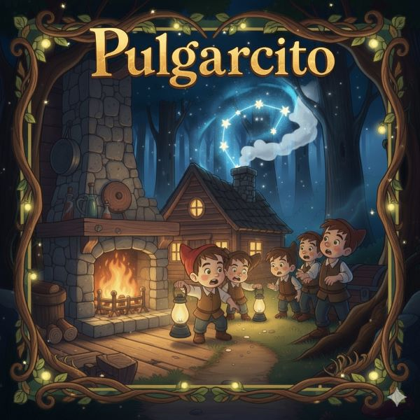

Pulgarcito: Aventura Gráfica Interactiva
Un proyecto desarrollado para aplicar conocimientos de diseño, narrativa y programación, creando una experiencia interactiva completa.
Un proyecto desarrollado para aplicar conocimientos de diseño, narrativa y programación, creando una experiencia interactiva completa.
Esta Aventura Gráfica Interactiva es una adaptación libre del cuento clásico de Pulgarcito.
La historia respeta algunos elementos tradicionales del relato, como los hermanos perdidos en el bosque y la idea de encontrar el camino de regreso, pero incorpora también decisiones nuevas y un estilo visual propio. El juego presenta una estética colorida e infantil, con ilustraciones editadas que acompañan el tono de un cuento sencillo, cercano y accesible.
El jugador debe avanzar por diferentes pantallas ilustradas, leer fragmentos de la historia y elegir las decisiones correctas para que los hermanos logren regresar sanos y salvos. Algunas opciones llevan a caminos alternativos o finales distintos, por lo que cada elección tiene un peso real dentro de la narrativa. El objetivo final es guiar a Pulgarcito y sus hermanos tomando decisiones clave en los momentos más importantes de la aventura.
 A lo largo del proceso aprendimos a planificar una historia interactiva desde la estructura base (flujo), y a manejar la lógica de estados, fundamental para construir una aventura no lineal.
Se encargó de la escritura de textos, la programación de las pantallas, la lógica del juego en p5.js y la estructura general del proyecto.
Se encargo de realizar el diagrama de flujo, la búsqueda y edición de imágenes, y luego integró el sonido dentro de la aventura gráfica..
A lo largo del trabajo fuimos revisando, ajustando y mejorando cada parte entre las dos para que el resultado final fuera claro, atractivo y funcional.